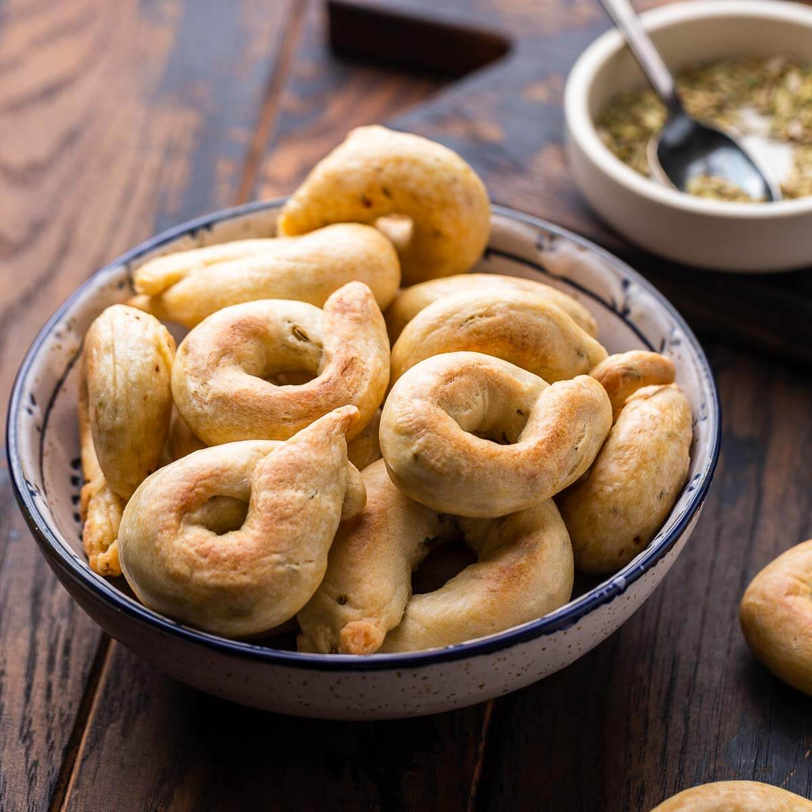

Taralli are Italian bagel-shaped dough rings made from olive oil, flour, and flavorings such as salt, pepper, and fennel seeds. The name tarallo comes from the Greek word daratos, denoting a type of bread. These snacks are also often paired with cheese and cold cuts, due to their unique flavor and texture.
Meal prep time : 1 hour 40 minutes
Servings : 80-90